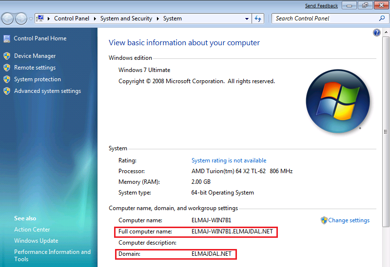

Impossibile accedere a portal.office.com
Verificare la corretta join al dominio

Procedere con il join del dominio nel caso mancasse.
Verificare la presenza di sts.posteitaliane.it tra le eccezioni in "Opzioni Internet".
Se mancante procedere con l'inserimento dell'eccezione.